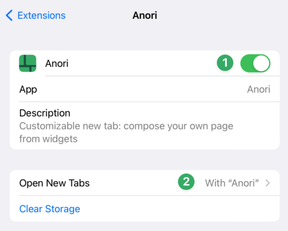

To start using Anori you'll need to enable it in Safari's settings.
To start using Anori you'll need to enable it in Safari's settings.
To start using Anori you'll need to enable it in Safari's settings. Process is a bit tedious, we know, but bear with us.
Firstly, you'll need to enable the extension (1) and then switch your new tab page to Anori (2). Here is picture, so you won't get lost in woods of Safari settings :)
